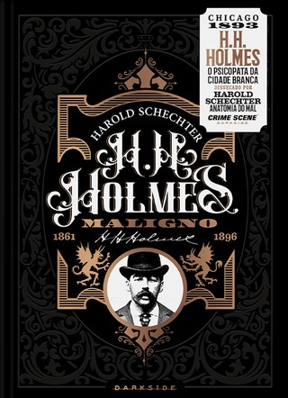
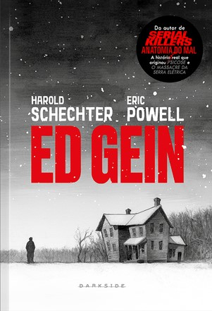

H. H. Holmes: Maligno
O Psicopata da Cidade Branca
Capa dura – 2 setembro 2020
R$ 79,90
Um psicopata brutal. Uma série de assassinatos macabros.
E um true crime tão perturbador que esgarçou os limites da realidade para ser eternizado na ficção de horror.
Ed Gein, a graphic novel escrita por Harold Schechter ― autor de Anatomia do Mal ― e ilustrada pelo quadrinista
Eric Powell é uma exploração profunda das origens do assassino necrófilo que assombrou os sonhos da América dos anos 1950.
Shop Now

Ed Gein
Capa dura – 5 maio 2022
R$ 50,90
Os assassinos em série não são uma invenção do século XX. Na segunda metade do século XIX, um homem aterrorizou os
Estados Unidos e pode ter sido responsável por centenas de mortes. Se trata de Herman Webster Mudgett, mais conhecido pelo nome de dr. Henry Howard Holmes.
Em H. H. Holmes: Maligno – O assassino da cidade branca, Harold Schechter, escritor norte-americano de True Crime e especializado no estudo de assassinos em série,
constrói um cuidadoso perfil do homem que, à época, foi considerado o mais pérfido dos Estados Unidos. Para angariar dinheiro e poder,
e dar vazão a seus diversos golpes e truques, o ambicioso Holmes pavimentou uma trilha de horror com inúmeras vítimas, de crianças a idosos.
Shop Now
Nobreza de Sangue: Vlad & Báthory
Capa dura – 1 setembro 2022
R$ 24,90
Seja Drácula, seja Carmilla, ou qualquer outra narrativa vampiresca,
apenas tenha em mente isto: elas não surgiram do nada, essas narrativas possuem uma origem e ESSAS ORIGENS SÃO MUITO REAIS!
Aqui trouxemos a biografia de duas grandes figuras da nobreza da Europa Oriental, Vlad III, o Empalador, e Elizabeth Báthory, a Condessa de Sangue,
que alcançaram a fama não apenas por seus títulos ou por suas riquezas, mas pela sua crueldade e sadismo.
Para que este livro fosse feito, vários profissionais se mobilizaram para trazer a melhor experiência de leitura: uma pesquisa acurada, científica e historiográfica.
Shop Now